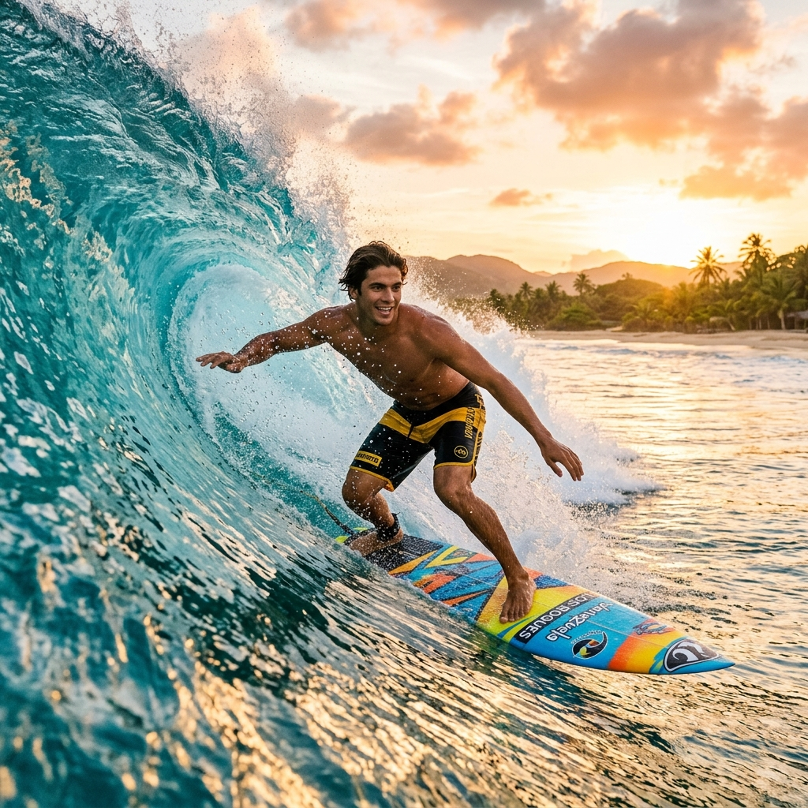
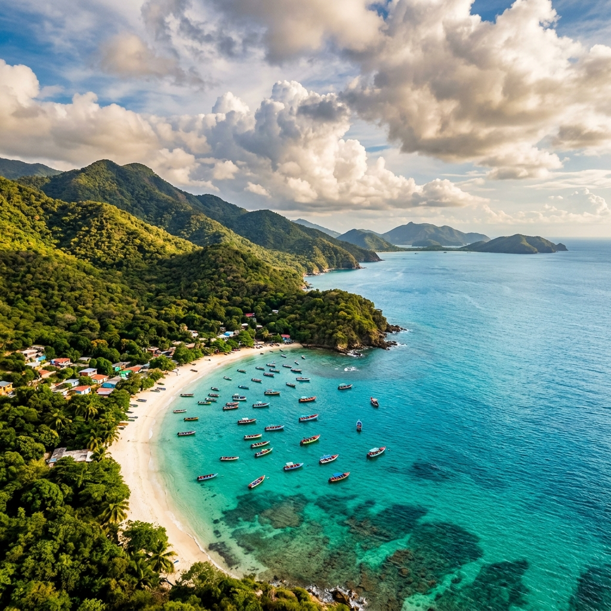
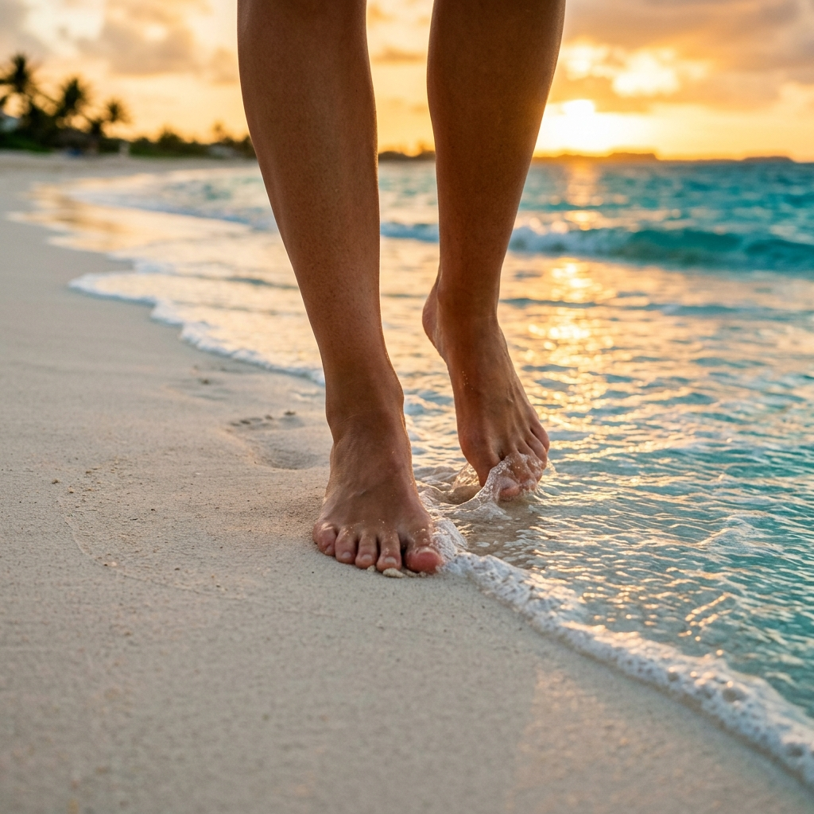
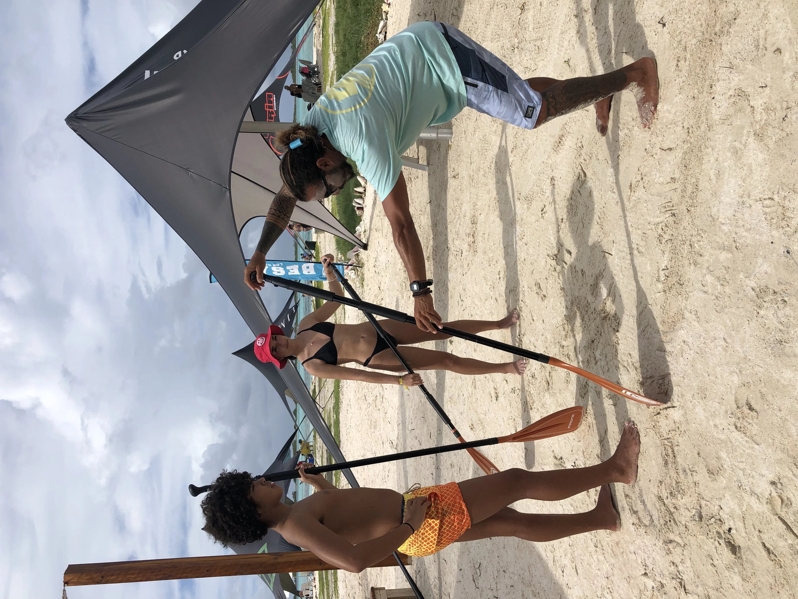
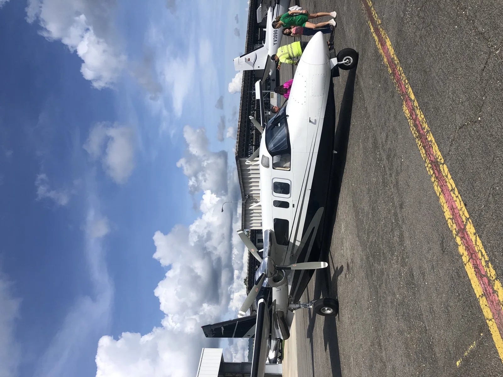
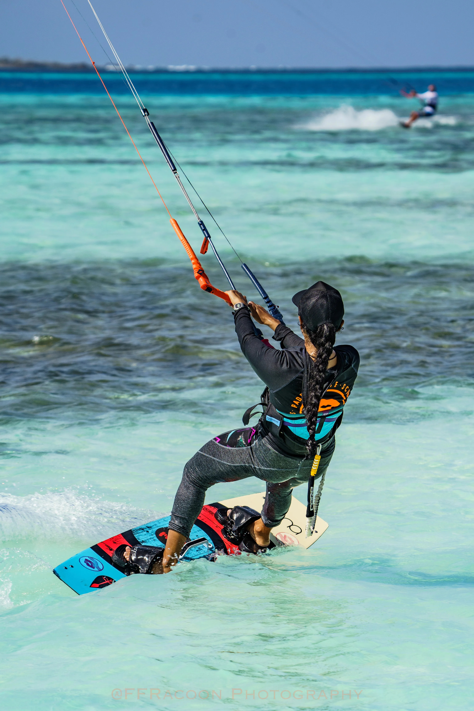

Hola! Soy
Ricky Waterman
Hola, mi nombre es Ricardo Parada, pero mis amigos me dicen Ricky y mis hermanos del mar me llaman Waterman. Así que tú, que serás mi amigo y mi hermano del mar, podrás decirme Ricky Waterman. Estudié Turismo con mención en Servicios Turísticos; soy un apasionado de la naturaleza y los deportes.
Si hay viento se navega, si hay olas se surfea, y si no hay ninguna de las dos se hace paddle o se pesca. Es precisamente eso lo que te convierte en un verdadero Waterman.
Una vida ligada al agua
De niño aprendí a surfear. En mi adolescencia descubrí el kitesurf en la isla de Barbados y en Cartagena, Colombia, y con el tiempo aprendí a hacer paddle, paddle surf, windsurf, wing foil y kite foil.
Aprendí a disfrutar de la naturaleza según sus condiciones: si hay viento se navega, si hay olas se surfea, y si no hay ninguna de las dos se hace paddle o se pesca. Es precisamente eso lo que te convierte en un verdadero Waterman.

Compartiendo la belleza de Venezuela
Como les mencioné, estudié Turismo y a lo largo de mi vida he trabajado en diferentes sectores de esta industria. Sin embargo, siempre quise tener mi propia agencia de viajes.
Hoy en día vivo en Viena, Austria, y tengo mi propia agencia. Como venezolano y enamorado de mi tierra, para mí es fundamental que las personas puedan viajar conmigo y conocer uno de los países más bellos del planeta: descubrir nuestras playas, nuestra gente, nuestra gastronomía y nuestro carisma único.

Un refugio contra el invierno
Esta idea nació durante un viaje a Venezuela a finales de un invierno. En el momento en que llegué a la playa y puse los pies en la suave y cálida arena del Caribe venezolano, sentí cómo ese calor entraba por las plantas de mis pies y calentaba mis huesos y mi cuerpo. Sentí cómo me llenaba de energía.
Fue una experiencia tan increíble que pensé: «¡Guao! Esto es un regalo que deberían darse todas las personas que viven el invierno». La idea es liberarte del frío, recargar tu sistema inmune y regresar con una energía inigualable.

Momentos con Ricky



Viaja conmigo.
Descubre Venezuela.
Te acompaño en cada paso de esta experiencia que cambiará tu vida.
Contáctame